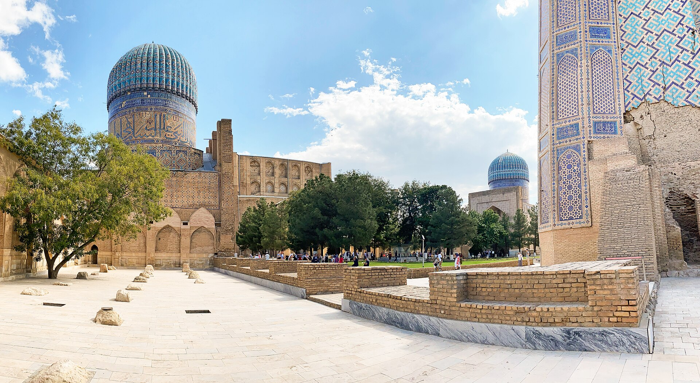

The pillars of Islam and iman: the Five Pillars of Islam and the six articles of faith
The Five Pillars of Islam (arkan al-Islam) are the five acts of worship prescribed for every Muslim: the shahada, prayer, zakat, fasting and the hajj. The six articles of faith (arkan al-iman) are the foundations of belief: faith in God, the angels, the revealed books, the prophets, the Last Day and the divine decree. This guide explains them from a mainstream Sunni (Hanafi) perspective, respectfully and based solely on reputable sources. This is general information, not a religious ruling or fatwa.

The foundations of Islam are usually set out in two frameworks: the acts of worship — the Five Pillars of Islam (arkan al-Islam), and the foundations of belief — the six articles of faith (arkan al-iman). Both are rooted in the well-known Hadith of Gabriel, recorded in the collections of Imam al-Bukhari and Imam Muslim. Below, each framework is explained from the perspective of mainstream Sunni Islam (the Hanafi school, widespread in Central Asia), respectfully and based solely on reputable sources.
The Five Pillars of Islam
The Five Pillars of Islam are five acts prescribed for every adult Muslim of sound mind: the shahada (testimony of faith), prayer, zakat, the fast of Ramadan, and the hajj. Their order and content are given consistently in the principal sources.
1. Shahada (the testimony)
The shahada is to utter the testimony of faith with the tongue and affirm it with the heart: «There is no god but God; Muhammad is the messenger of God» (Arabic: «la ilaha illa Allah, Muhammadun rasul Allah»). Sincere affirmation of it is the basis of belonging to the Muslim community.

2. Prayer (salat)
Salat is the worship performed five times each day. The five prayers are: Fajr (dawn), Dhuhr (just after the sun passes its zenith, midday), Asr (mid-afternoon), Maghrib (just after sunset), and Isha (night). Prayer is regarded as the daily pillar of Islam.
3. Zakat
Zakat is the obligatory charity given to the poor and needy. The standard rate on accumulated wealth such as money and trade goods is 2.5% of what remains above a set minimum threshold (nisab) held for one lunar year. The nisab is the minimum amount of wealth at which zakat becomes due, benchmarked to a quantity of gold or silver.
4. Fasting (Ramadan)
The fast is observed in the lunar month of Ramadan: abstaining from food, drink and other things that break the fast from dawn (the end of the pre-dawn meal) until sunset. The fast of Ramadan is one of the Five Pillars of Islam.
5. Hajj
The hajj is the pilgrimage to the sacred Kaaba in Mecca. It is obligatory once in a lifetime for every Muslim who is able — physically and financially. For those who are not able, the hajj is not obligatory.
The six articles of faith
The six articles of faith (iman) in the Sunni view are belief in: (1) God, His existence and oneness; (2) the angels; (3) the revealed books (the Qur'an and earlier scriptures); (4) the prophets and messengers (Muhammad, peace be upon him, being the last); (5) the Last Day (the Day of Judgment and reckoning); and (6) the divine decree — that both its good and its evil are within God's knowledge and will. Sunni sources count the articles of faith as precisely six. (Shia schools classify the foundations of belief differently — a separate topic.)
Islam, iman and ihsan — the Hadith of Gabriel
According to the Hadith of Gabriel, the angel Gabriel came in human form and questioned the Prophet (peace be upon him) about the religion, and thereby its three dimensions were set out: islam — the outward acts (the Five Pillars); iman — inner belief (the six articles); and ihsan — the spiritual excellence of worship, that is «to worship God as though you see Him, and if you do not see Him, [to know] that He sees you». These three dimensions together constitute the religion (the hadith is reported in al-Bukhari and Muslim).
The Hanafi school in Central Asia
In Central Asia, including Uzbekistan, the Hanafi school of Sunni jurisprudence has traditionally predominated. Historically Transoxiana (the territory of present-day Uzbekistan) was a major centre of Hanafi scholarship, associated in theology with the Maturidi school.
Important note
This is general, fact-based information; it is not a religious ruling, fatwa or advocacy. Some terms, their pronunciation and certain details may differ slightly between sources and schools. For specific religious questions it is advisable to consult qualified religious scholars and reliable sources (for example the publications of the Muslim Board of Uzbekistan).

Sources
- Encyclopaedia Britannica — «Pillars of Islam»: besh arkon tartibi, shahodat matni, besh vaqt namoz, zakot 2,5%, haj sharti
- Sahih al-Buxoriy va Sahih Muslim — Jibril hadisi (Islom, iymon, ehson taʼriflari; iymonning olti asosi)
- Oxford Islamic Studies / Oxford Reference — «Five Pillars of Islam» va «Iman» (arkon taʼriflari)
- BBC Religions — Islam: the Five Pillars (amaliy arkonlar tavsifi)